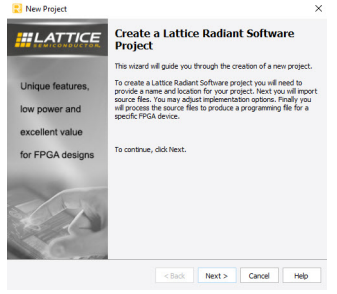

This topic describes how to create a new project in the Radiant software.
A project is a collection of all files necessary to create and download your design
to the selected device. The New Project wizard guides you through the steps of
specifying a project name and location, selecting a target device, and adding existing
sources to the new project.
Note: Do not place more than one
project in the same directory.
To create a new project, follow these
steps:
From the Radiant main menu, click the New Project
button, or
choose File > New > Project .
The New Project confirmation window opens, as shown in Figure 2.Figure 1. Figure 2. New Project Confirmation Window
